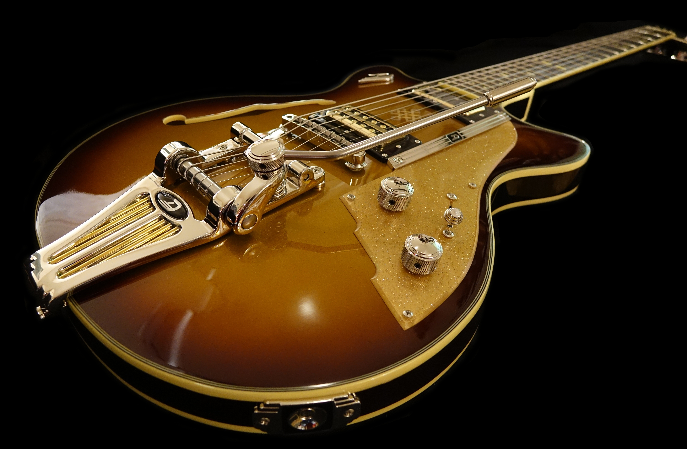

Hello. I'm Jacob Parra!
Software Engineer
I am an inspiring software engineer at thinkful. I am completely brand new to coding but have come to truly enjoy it. I currently reside in Charlotte, North Carolina but I am originally from Texas. I have lived here for about 20 years now and love this city. I think the one thing that at least makes me feel special is my daughter. She makes me feel like I can do or be anything. She inspires me to be special and kind to her and everyone i come to be around. Besides that I am your normal guy who loves life and the people I surround my self with.
About Me
 I have always been one of those people who loves technology and
always secretly wanted to be able to somehow be part of it. Now that I have the oppurtunity I am going to make the absolute best of
it. I have been excited about learning how to code for months now. I came across it by mere coincidence but my passion grows everyday as i continue to learn.
I have been in construction for just about 18 years and have owned
a company for the last few years. I have been in management roles for the past 12 years. I was always the first to arrive and last to leave. I moved up in every
job I ever had and with that being said i think those same attributes will be transferable to web
development. I have always been a part of great teams and know that it takes a village to make projects come together in
the most effcient way possible. I have no problem putting in the work. I did it in college and was always in the top
of my classes. I have a mind for learning new things and solving complex problems.
Outside of coding I am a longtime musician, I've played guitar for
about 15 years now. I'm not the greatest but love playing.
Charlotte is known as the mecca of disc golf so right now that is my main sport and I play it often. I am a course director for one of the disc golf parks here even though it is a thankles
job I love doing it. I have always been an athlete and continue to be to this day. I play most sports but really love basketball, tennis, and golf.
When I get hired and start working as a web developer I hope to provide all the services I have been provided over the years by the web devs I have hired.
The services I hope to provide to my future clients would be as follows:
- Modern Visual Designs
- Interaction
- Easy to Navigate
- Web Friendly
- Turnaround Time
- Intuitiveness